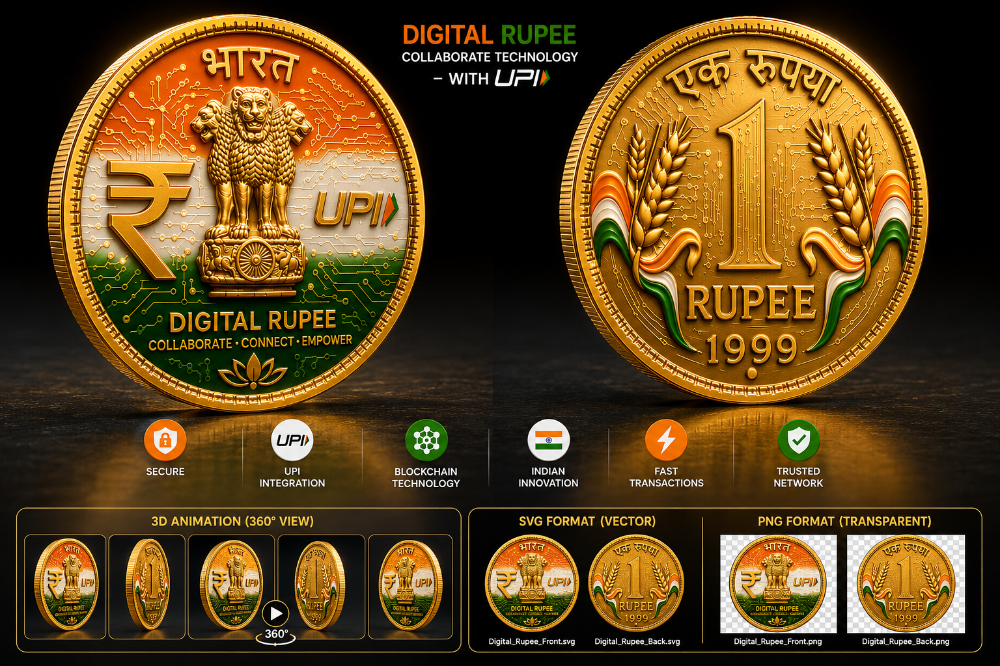
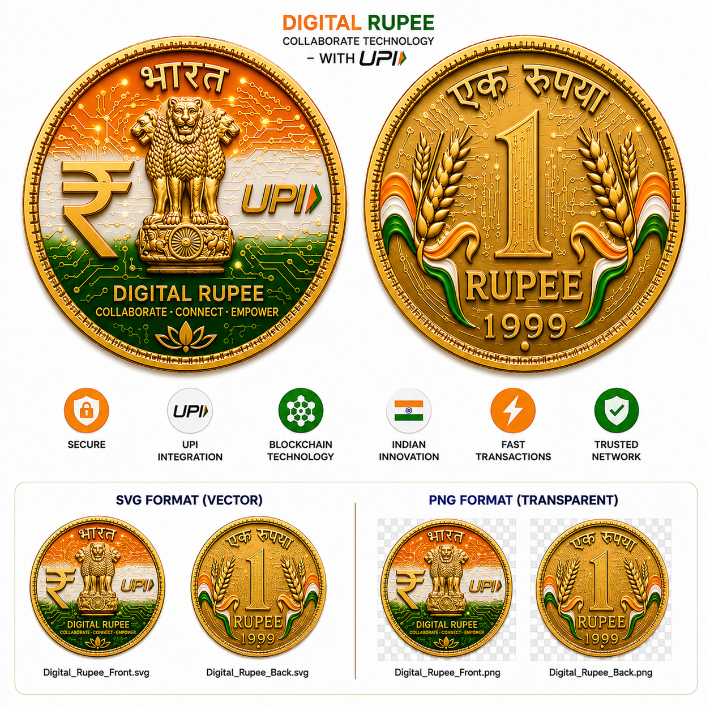

Identity-first wallet
Connect coin ownership to a clear digital identity layer so records are meaningful and personal.
HI Wallet Suite
One mobile-ready hub for Human Digital Identity, HI coin records, encrypted recovery, merchant flows, and marketplace actions.

Balance, ledger, transfer, and identity-bound wallet actions.
02 HI CoinCoin rules, value model, and the trusted ecosystem concept.
03 VaultEncrypted backup, recovery, and protected local app data.
04 MerchantMerchant HDI, QR payment simulation, and settlement flow.
05 MarketplaceUse HI for services, work, learning, and contribution.
The page is a public exploration hub, not a financial product. It maps how a future-ready coin community can discuss wallets, identity, payments, transparency, and real-world utility.
Connect coin ownership to a clear digital identity layer so records are meaningful and personal.
Borrow the simplicity people already understand: scan, approve, verify, and keep transparent receipts.
Let builders, users, merchants, educators, and local groups shape practical use cases together.
Bitcoin proved that a public ledger, scarcity rules, wallet ownership, and network verification can create a new digital asset class. This concept explores those principles through an India-first experience: identity-aware wallets, UPI-style usability, merchant records, and community trust.
Every coin movement should produce a timestamped record that can be audited without confusion.
Users need a clear wallet address, balance, history, and recovery path before any system can feel trustworthy.
A serious coin model needs rules for generation, limits, burns, and visible supply accounting.
A professional digital currency page should explain the system, not only show a coin image. The architecture connects coin issuance, smart contract logic, UPI bridge thinking, wallets, compliance, and settlement rails.
Coin rules, token identity, and visible supply.
Blocks, hashes, transaction history, and audit trail.
Address, balance, keys, identity, and permissions.
UPI-inspired payment UX and merchant settlement records.

A coin can only become useful when people understand why it is secure, how it connects to payments, where transaction records live, and what protections exist for ordinary users.
Secure walletDevice identity, HDI, and local ledger history make ownership visible to the user.
Payment bridgeUPI-style behavior keeps the experience familiar: scan, confirm, receive proof.
Trusted networkCommunity education, merchant stories, and transparent limits create adoption confidence.

India’s digital payment behavior has already trained millions of people to use fast payment rails. A responsible coin community can learn from that behavior while keeping education, safety, and compliance at the center.
This page presents a concept and community direction only. It is not legal tender, not investment advice, and not a live public cryptocurrency offering.
LearnExplain wallets, coin records, security, limits, and responsibilities in simple language.
BuildCreate prototypes for identity, payment receipts, merchant acceptance, and community rewards.
VerifyKeep every transaction record inspectable, exportable, and tied to clear user consent.
ExpandInvite global contributors to adapt the model for local communities and real needs.
Publish simple explainers about digital coin basics, UPI-style flows, and wallet safety.
Use the HI Wallet as a local sandbox for identity-bound coin records and balance history.
Map how stores, creators, NGOs, and local communities could use verified digital receipts.
Define transparent rules for identity, privacy, audit trails, limits, and responsible adoption.
This is for builders, students, founders, designers, policy thinkers, merchants, and community leaders who want to explore a trusted digital currency experience from India to the world.
Generate local HI coins after identity setup and inspect how HDI, device identity, balance, and ledger history can work together inside a private browser-based prototype.